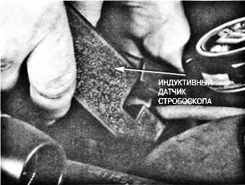
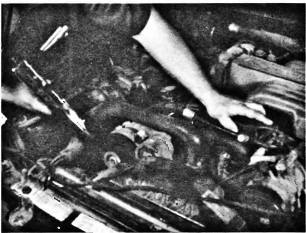

Регулировка угла опережения зажигания

Ил. 9.1. Инструменты и оборудование, необходимые для проверки и регулировки угла опережения зажигания: стробоскоп и ключи с соответствующими головками, удлинительными вставками и приводами с храповыми механизмами, необходимые для откручивания прижимного болта или гайки крепления распределителя зажигания
Ил. 9.2. Ознакомьтесь с указанными в наклейке под капотом автомобиля или в руководстве по его техническому обслуживанию данными, регламентирующими величину угла опережения зажигания и режим работы двигателя при его проверке и регулировке
Ил. 9.3. Найдите, очистите от грязи и выделите с помощью маркера установочную метку, которая обычно стоит на гасителе крутильных колебаний, стоящем на передней стороне двигателя. Чтобы установочную метку было лучше видно, выделите ее с помощью мела, корректирующей жидкости или краски
Ил. 9.4. Подсоедините провод питания и земляной провод стробоскопа соответственно к плюсовой и минусовой клемме аккумуляторной батареи
Ил. 9.5. Наденьте клещи индуктивного датчика стробоскопа на высоковольтный провод свечи зажигания цилиндра №1
Ил. 9.6. В соответствии с процедурой проверки угла опережения зажигания, установленной для этого восьмицилиндрового V-образного двигателя Ford рабочим объемом 5,0 л, необходимо найти и отсоединить разъем SPOUT. Этот разъем стоит рядом с распределителем зажигания
Ил. 9.7. Выньте кабельный разъем SPOUT из ответной части Через контакты этого разъема сигнал датчика, установленного в распределителе зажигания, передается в компьютер, который по нему осуществляет коррекцию начального угла опережения зажигания
Ил. 9.8. В большинстве процедур проверки угла опережения зажигания, составленных для двигателей, оснащенных вакуумным автоматом регулировки угла опережения зажигания, указано, что вакуумный шланг, идущий к вакуумному автомату распределителя зажигания, должен быть отсоединен и плотно закрыт
Ил. 9.9. В большинстве автомобилей компании GM, оснащенных карбюраторными двигателями и компьютерной системой контроля, таких, как этот восьмицилиндровый V-образный двигатель автомобиля Chevrolet, выпущенного в середине 1980-х годов, необходимо расстыковать четырехконтактный разъем, который находится рядом с распределителем зажигания. В некоторых моделях двигателей GM для установки угла опережения зажигания необходимо сначала соединить между собой контакты А и В разъема передачи данных (DLC). Обязательно изучите процедуру проверки угла опережения зажигания, составленную для той модели автомобиля, которую вы обслуживаете
Ил. 9.10. Заведите двигатель и направьте свет стробоскопа на установочные метки. Будьте осторожны, чтобы случайно не попасть в зону действия лопастей вентилятора или приводных шкивов
Ил. 9.11. Установочные метки в импульсном свете стробоскопа, синхронизируемого по зажиганию цилиндра №1
Ил. 9.12. Если угол опережения зажигания находится вне установленных пределов (установочная метка не совпадает с указанной неподвижной меткой), ослабьте с помощью ключа прижимнои болт или гайку крепления распределителя зажигания. Выпускаются специальные изогнутые ключи, облегчающие выполнение этой операции
Ил. 9.13. Не откручивайте полностью прижимнои болт или гайку, а только ослабьте его настолько, чтобы распределитель зажигания можно было поворачивать
Ил. 9.14. Это самая сложная операция. Следя за положением установочной метки, плавно поворачивайте распределитель зажигания до тех пор, пока она не займет правильное положение. Прижим распределителя зажигания должен быть ослаблен настолько, чтобы распределитель можно было поворачивать, но при этом он не мог бы поворачиваться самопроизвольно
Ил. 9.15. После того как установочная метка установлена в заданное положение, плавно затяните прижимной болт (гайку) крепления распределителя зажигания. После этого еще раз проверьте, что установочная метка осталась в правильном положении, потому что при затягивании прижимного болта распределитель зажигания может повернуться, что вызовет изменение угла опережения зажигания

Ил. 9.16. Состыкуйте разъем SPOUT
Ил. 9.17. Отсоедините стробоскоп от высоковольтного провода свечи зажигания цилиндра №1 и клемм аккумуляторной батареи
Ил. 9.18. Для "качественной" регулировки угла опережения зажигания можно использовать также вакуумметр. Может случиться так, что гаситель крутильных колебаний поврежден и установочная метка сбита с правильного положения относительного неподвижной метки или установочная метка на двигателе отсутствует
Ил. 9.19. Процедуру регулировки угла опережения зажигания с помощью вакуумметра начинают с того, что подсоединяют вакуумметр к штуцеру пробоотбора вакуума во впускном коллекторе двигателя
Ил. 9.20. Ослабляют прижимнои болт (гайку) крепления распределителя зажигания. Разъем SPOUT и никакие другие разъемы не отсоединяют. Наилучший результат регулировки угла опережения зажигания с помощью вакуумметра достигается тогда, когда компьютер продолжает корректировать угол опережения зажигания
Ил. 9.21. Заводят двигатель и дают ему прогреться до нормальной рабочей температуры. Медленно поворачивают распределитель зажигания (в направлении увеличения угла опережения зажигания) до тех пор, пока по показаниям вакуумметра не будет достигнуто максимальное разрежение (в данном примере оно составляет 19,5 дюйма ртутного столба)
Ил. 9.22. По достижении максимального разрежения по показаниям вакуумметра распределитель зажигания поворачивают в противоположном направлении (в направлении уменьшения угла опережения зажигания) до тех пор, пока показание вакуумметра не снизится на 2 дюйма ртутного столба по сравнению с максимальным показанием, полученным на предыдущем шаге регулировки
Ил. 9.23. Когда стрелка индикатора вакуумметра дойдет до отметки на 2 дюйма ниже наивысшего показания (в данном примере это отметка 17,5 дюйма ртутного столба), затягивают прижимной болт (гайку) крепления распределителя зажигания. Хотя этот способ регулировки угла опережения зажигания не обеспечивает точности, гарантирующей достижения режима, обеспечивающего минимальную токсичность выхлопных газов, но он достаточно точен для того, чтобы установить безопасный режим работы двигателя, предотвращающий его повреждение
Ил. 9.24. После завершения процедуры регулировки угла опережения зажигания проверьте еще раз, чтобы прижимной болт крепления распределителя зажигания был надлежащим образом затянут, и подсоедините все вакуумные шланги и разъемы, отсоединенные на время выполнения этой процедуры